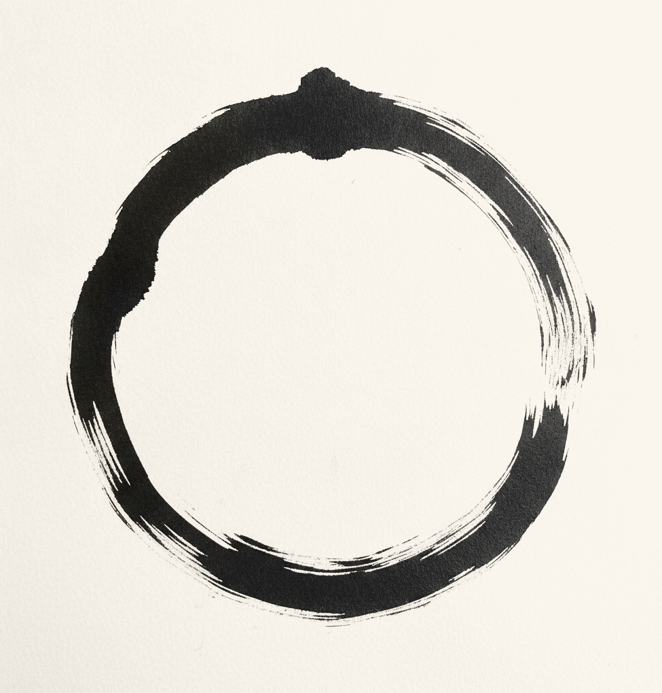
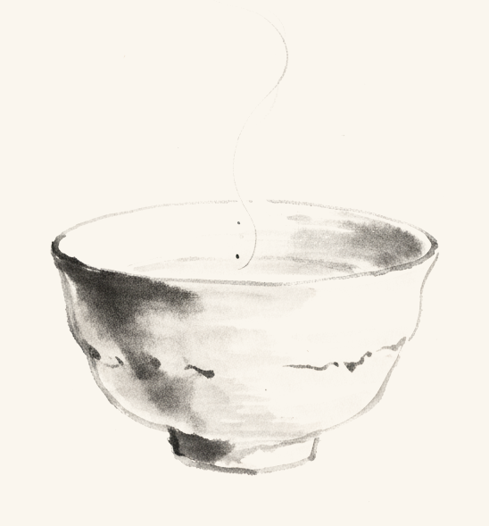

You did not find this book because your life is broken. You found it because your mind is loud, and you suspect it does not have to be.
I spent forty years learning one thing in silence: peace is not found by changing where you live. It is found by changing how you meet your own mind. That sentence is easy to read and slow to learn. The thirty days in this book are how I teach it.
Each day asks for ten minutes, sometimes less. One short teaching. One small practice. One line to write. That's all. Don't read ahead. A day read in one minute does nothing; a day lived changes the next one.
Some practices will feel too simple to matter. Do them anyway. A glass of water beside a bed is a small thing. So is a single match in a dark room.
If you miss a day, you have not failed. Begin again where you stopped. The path does not resent slow walkers. It only asks that you keep walking.
The first minutes of the morning belong to whoever takes them.
Most people lose the day in its first two minutes. The alarm rings, the hand reaches for the phone, and before their feet touch the floor they have invited a thousand strangers into the bedroom. The news, the messages, the noise. Then they wonder why the day feels heavy before it has begun.
The first minutes after waking are the most receptive of your whole day. Your mind has not yet taken anything from anyone. Whatever you place there first sets the tone for everything after. Today, you choose what enters first.
What entered your mind first this morning, and did you choose it?
Water answers the one who touches it.
Tonight you will do something my teacher asked of me on my first evening in the monastery. I thought it was beneath me. I was wrong about that, and about most things that year.
Before you sleep, fill a glass with clean water and hold it with both hands. Say quietly: while I rest, absorb what is heavy. Place it beside your bed. In the morning, look at it before you look at anything else. Then pour it away.
Does the water carry your worries out of the room? I will not tell you what to believe. I will tell you what the practice does that you can verify: it ends your day with a deliberate act instead of a scroll, it gives your last waking thought a shape, and it puts something between you and the phone in the morning. A ritual is a handle on the mind. The hand that reaches for a glass is not reaching for a screen.
What did you notice in the moment before you poured it away?
Your body does not understand humour. It understands repetition.
Today, no new ritual. Today you only watch your mouth.
Every word you say about yourself is received as an instruction. Say "I'm stupid, I'm weak, I always fail," even laughing while you say it, and the body does not laugh. It prepares. The shoulders tighten, the breath turns shallow, the mind stands guard. Many people are not cursed by life. They are cursed by the way they speak to themselves.
You do not need to shout affirmations at a mirror. Just stop wounding yourself with your own mouth. Speak to yourself the way you would speak to a tired friend. Change the way you speak, and slowly your life begins to listen.
How many times did you catch the old voice today?